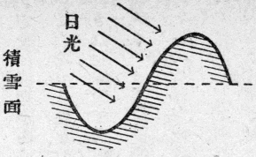
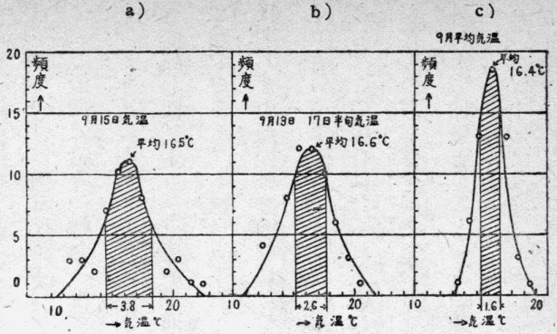
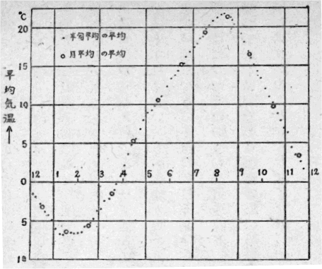
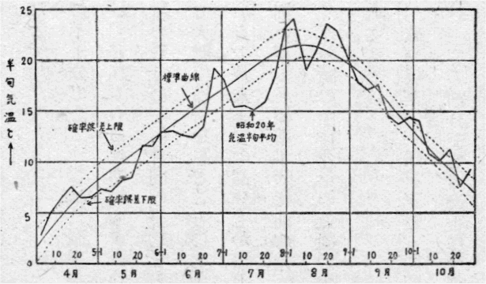
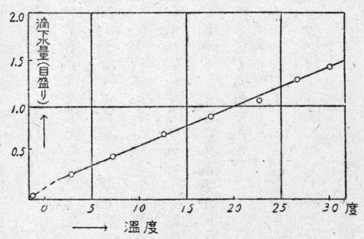

終戦と同時に、ニセコの観測所は、当然閉鎖の運命にあった。
親元の技術院が解散して孤児になったこの研究所は、まず解体するより仕方がない。それにこの研究所の使命であった航空気象学の問題も、もう我が国では用が無くなった今日、それを一つ育て上げてみようという
技術院の方は、戦争がすんだから戦時研究は中止、従ってその施設は取り壊し、という風に話は極めて明瞭であるが、私たちにしてみれば、過去五年間にわたって、苦心して作り上げた研究所を、そのまま壊してしまうのは、ちょっと忍びないところがある。
いろいろ考えた末に、結局この研究所を、農業物理の研究所として更生させようではないかという案に落著いた。ちょっと考えてみると、少くも我が国の農業には、化学はかなり取り入れられているが、物理学はほとんど入っていないような気がする。農業物理という言葉もあり、大学にはそういう講座もあるが、その方面で主に採り上げられている問題は、耕地整理とか暗渠排水とかいうような農業土木の問題か、そうでなければ、農具の創案改良という風な農業器械学の方面の題目が多いようである。それらと全くちがった意味で、農業に物理学を導入することが、少くも可能ではあるであろう。
農学部の先輩の先生の話では、農業は天地人の綜合芸術で、そのうち天が八十パーセントを支配しているということである。八十パーセントというのはもちろん言葉の
こういう年、いわゆる冷害の年に、増産をするには、天候の方に少し遠慮をして貰うのが一番早道である。冷害の年でなくても、飛躍的の増産をはかるには、何とかして幾分でも天候を支配する方法を考えてみる必要がある。天候を支配する試みなどというと、すぐ一笑に附されてしまうのであるが、品種の改良や肥料の研究にあれだけの注意を払いながら、ほんの一部の学者の研究を除き、一般には天候に対しては絶対無抵抗の態度を持しているように見える。
天候自身は人間の力で変えることは出来ない。しかし少し考えてみれば、そこにはいろいろな道がありそうである。そのうちで一番良い方法は、もう十年前から有識の気象学者たちが著手し、既に相当の成績をあげている長期予報の研究である。冬の間の気象状態の調査から夏の天候を予知する研究であって、これが巧く行けば、作付品種の選定によって、天候に順応することが出来る。即ち消極的に立派に天候を支配することが出来るのである。
長期予報にはいろいろな方法があるが、そのうちで一番興味があって、しかも有望なのは、オホーツク海の流氷状態とその年の夏の東北北海道の天候との関係である。この研究は中央気象台の根岸飛行士によって、過去約十年間にわたって、毎冬実施されて来たのである。根岸氏は、軍から払下げの廃品飛行機を自分で修理しながら、冬毎に女満別の飛行場を基地として、流氷のオホーツク海上を飛んでいたのであるが、この生命がけの研究が十年近くも、北海道の地の果で黙って続けられていたことを余り人は知らないようである。
終戦後間もない頃、根岸氏に会った時に、氏はせっかくの研究がこれで中止になるのではないかと、たいへん心配していた。流氷の多寡、その分布状態、特に春になってからのその消失の遅速が、確かに夏の天候を支配することが分ったのである。この数年来、やっと見当がついて、予報を出してみたが、皆よく適中しているという話であった。不思議なことは、根岸氏のこの予報を利用している農業指導者が非常に少い、というよりほとんど無いことである。稀れにあってもそれは例外のことで、実際にはほとんど利用されていないようである。今年のように冷害が立派に予知されていた年に、北海道で専ら晩稲の種子のみを配布して、ほとんど皆無作に終った所もあるというような極端な例さえある。官庁や農業会では、供出の方にばかり気をとられて、肝心の獲る方を忘れていたのかもしれない。もっともそれは冗談で、ほんとうのところは、我が国の朝野を通じて瀰漫している学問軽視の風潮の一つの現われに過ぎないのであろう。科学尊重という言葉は流行っているが、ほんの付け焼刃にすぎない。
小さい旋盤だのボール盤だのを自分で持って、部分品を自分で作り、調整も自分でして、やっと飛べるようにする。そういう危かしい飛行機でオホーツク海上の雪空を十年間飛び続けたこの研究も、結局誰にも用いられず、今年の冬からは中絶されることになるであろう。これは根岸氏個人の問題ではなく、新生すべき日本の国策上の大問題である。しかしそれも致し方ないことなのであろう。流氷観測による長期予報が駄目としても、外にいろいろな方法がある。特に統計的方法による長期予報では、従来もいろいろな論文が沢山出ている。その方面の学問の進歩を待つことにしよう。
天候を克服する第二の方法は、少し弱気な方法である。天候が農業を圧倒的に支配するといっても、その支配の機巧を考えてみると、そのうちの一部分は、制御可能の地上条件を通じて作物を支配しているように思われる。濃霧地における日射不足というような問題は、これは天候が直接支配しているので、簡単には制御が出来ないであろう。しかし豪雪地方で春さき雪の融け方が遅いために作付がおくれ、従って収穫が少くなるとか、二毛作の時期を逸するとかいうような問題は、制御可能な地上条件を通じての天候の影響である。
北海道の平地や本州の高原地帯の水田における冷害は、積算気温の不足とか、許容限界気温よりも寒い日があるとかいうことばかりでなく、水温の低いことが著しい影響を
融雪の促進、水田水温の上昇、泥炭地地温の上昇などという風に、問題を抜萃してみると、これは農業物理というよりも、むしろ純粋な物理学の問題である。これ等の問題の解決が出来れば、天候をある意味では立派に支配したことになる。
ついでながら、濃霧地における日射不足の問題も、全く初めから匙を投げたものでもない。昨年の夏根室で行なった霧の綜合研究の中に、中央気象台の三宅博士の霧中における太陽紫外線強度の測定がある。その結果によると、太陽紫外線は案外よく霧を透すので、平均してあの程度の海霧でも、だいたい五割くらいは地上に達している。もし紫外線と作物品種との関係が十分よく調べられたら、あとは地温の上昇をはかることなどによって、科学的な根拠をもった適作品種を選定することも可能であろう。そういう巧いものはないかもしれないが、初めから棄てたものでもないような気もする。
ところで融雪の促進といい、水温地温の上昇といっても、問題はそれが全耕地面積というような広大な地積について、実施可能であるか否かという点に帰する。いずれにしても熱
これ等の問題のうちで、現在のところ一番目鼻のついているのは、融雪促進の研究である。幸いなことには、この融雪問題の解決が、水温や地温の上昇についても、非常に役立つものと考えられるのである。
融雪促進は、現在既に一部の地方では、その一番簡単な方法が実施に移されている。それは春さき雪面上に土を
北国における春さきの日射は強い。半年の陰鬱な曇空の償いをするかのように、一天紺碧に晴れ上った空に、太陽がぎらぎらと輝く日がよく続くことがある。これだけ強い日射を土によって吸収させれば、五日や六日といわずもっと早く雪が消えそうなものである。それには理由があるのであって、この方法には一つの欠点がある。三月の下旬になって、雪の降り止むのを待って、土を
この点を考慮して、新しい別の融雪促進法を考えた研究者がある。それは越後の十日町にある森林治水試験地の高橋喜平氏である。
四月の太陽はまだ随分低いので、光線は雪面に斜めに射す。このことが反射を強くする一つの原因ではないかと高橋氏は考えた。それならば日光が雪面に直角に当ったならばもっとよく吸収され従って、融雪ももっと促進されるかもしれない。そのために高橋氏は、積雪表面上に溝を掘り、その掘り上げた雪を溝の片側に積み上げてみた。こうすると雪面上に高い

第１図 畝式融雪促進法（高橋喜平）
こういう畝を畑一面に並行に沢山作って試験してみた結果は、非常な好成績で、二週間近くも早く雪が消えたのであった。この試験は今年の春さき十日町で行なわれた。十日町といえば、雪で名高い越後でも特に雪の多い所である。そこで今年の大雪が二週間も早く消えたのは大成功であろう。高橋氏は前からもずっと雪の研究をしていたのであるが、この新融雪法の試験を始めた頃は、戦局が急迫し既に硫黄島を失い、沖縄もまた危いと国内騒然としていた頃である。そういう時期にも丈余の雪に埋れた越後の片隅では、こういう研究が著々進行していたのである。
二週間早く雪が消えれば大問題である。馬鈴薯の二倍増産は確実だと農家の人たちはいっている。二倍はどうか分らないが、作付を二週間早めることは、かなり画期的なことである。ただ問題は、そういう畝を何町歩という畑全体にわたって作るにはどうしたらよいかという点である。高橋氏の研究は、試験的に狭い面積について行なったので、溝を掘るには人力によった。しかし実際の畑についてこの方法を実施するには、どうしても器械を用いなければならない。原理は確立されたのであるが、そういう雪上プラウとでも称すべき器械の創案と、その実用化とはなかなかの難問である。更に大面積については、雪上トラクターを使う必要があろう。そういうものも他の目的で作ったものが試験的には既に成功しているので、それを改良すれば見込みは十分ある。しかし実用化の研究はこれから著手すべき残された問題である。
註、この研究はその後私たちの研究所で大規模にくり返され、けっきょく畝の効果も少しはあるが、土を薄く一様にまく効果の方が多いことが分った。しかしいろいろな階段を経てこういう研究は進むものだという一つの良い例である。（二三、八記）
融雪促進と同系統の問題であるところの水温地温の上昇についても、太陽
水田の水温上昇については、従来も
以上の話はいわば常識論であるが、水温上昇について比較的閑却されているのは、融雪促進の問題である。水を温めることももちろん大切であるが、あらかじめ土地を温めておくことも一つの方法と思われる。水田上の積雪を例えば二週間早く消して、春さきの強い日射を十四日間、田の黒土に吸収させておいたならば、案外効果があるのではなかろうかという気もする。良いには決っているのであるが消雪に費した労力に値するか否かは、実験をしてみなければ分らない。ただ一応ちゃんとした研究をしてみる必要があることは確かである。泥炭地などの地温上昇についても、全く同様なことがいい得る。
何でも雪を消す話になるようであるが、雪を早く消すということは、降雪地方ではある意味では、立派に天候を支配することになるのである。満洲や北海道の東部地方のように雪の少い所では、融雪促進の心配は無いが、その代り土地が凍るという問題がある。満洲ではその問題が特に大切で、北満などでは二間くらいの深さまで土が凍ることも珍しくない。この凍土の表面がある程度の深さまで融解して排水されるまで待つために、やはり作付が遅れるのである。
もっとも最近までハルピン大学の教授であった浜田博士の話によると、ソ連は凍土上に特殊の栽培法を行なうことによって、シベリアで大量に小麦を生産し、それが今度の戦争中のソ連の食糧事情に甚大な貢献をしたのだそうである。
しかしそれはソ連の科学の輝しい勝利であって、一般には、凍土地帯では作付がおくれて困るのが常識になっている。
ところが降雪地方では、土が凍る心配はまず無い。雪は良い断熱材料であって、三尺も積れば、気温が零下二十度くらいになっても、その下の土は凍らない。それで厳寒の期間中は雪で土の凍結を防いで貰い、春さきになって早く消してしまうのが一番悧巧な方法である。春さきになって早く消す自信さえあれば、冬の間は土地の保温用にわざわざ降らしたものだと思って居ればよい。消雪の研究は、そういう意味では、立派に天候を支配する研究ということが出来るであろう。
天候を克服する第三の方法として、積極的に天候を支配することが出来ないかどうかを考えてみよう。
ほんとうの意味で積極的に天候を支配しようとする企ては、
今年の北海道の米作が、余りにもひどい結果に終り、日々の配給でその被害を受けているので、その例について考えてみることにしよう。今度の農業物理研究所の試験水田の候補地として考えている水田などでは、八月の末に穂が出て、それがぴんと立ったままで霜の時期に入り、収穫は皆無に近かった。稲の穂孕み時に、花粉が成熟して正常に結実するに要する気温の最低限界は、十三度から十五度くらいの範囲という話である。いくら冷害の年だといっても、七月末から八月上旬にかけて、気温が十三度以下ということは滅多に無い。それならばちょうどその時期に穂が出るように稲を育て上げればよいわけである。北海道の標準気象状態は分っているので、まず標準状態について考えるとして、稲の性質が分って居れば、その時期に穂が出るには、何時頃田植をすればよいかという計算は出来るはずである。この場合に必要な稲の性質は、田植時から開花時までに要する各種気象要素の積算量及び許容最低気温限界であろう。それ等の値が稲の品種によってどれくらい差があるかが分って居れば、品種別にこの計算は出来るはずである。
このようにして開花時期を指定して逆算した田植時期は稲の品種によってそれぞれ異る。しかしどの品種の稲も、とにかくその指定された時期に田植をすれば、少しくらい気候が標準状態からずれても、著しい凶作というようなことは無いであろう。ただ問題は、そういう計算から出した、いわば勝手な時期に田植をして、巧く活著して生長してくれるかどうかという点にある。それで今一つの品種を採って、その田植時期を計算したとする。その時期が決ったら、その土地におけるその時期の標準気象要素を調べてみる。標準としては、過去何年か何十年か記録のある範囲内で、その時期の値の平均を採ればよい。一方その品種について、それが田植の際に活著し且つ生長をつづけるに必要な気象要素の最低限界を調べてみる。それは農学の方で既に分っていることであろう。ところで気象要素といっても沢山あるが、仮にその中で水温が主要素であると仮定する。もし外にも大切な要素があれば、それについて同様な取扱いをすればよい。
希望する田植時期の水温と、苗が活著するに必要な最低水温とを比較してみる。この場合多分前者の方が後者より低いであろう。そうでなければもっと早く田植をしているはずである。ところで気温の方は、これを人工的に上げることは現在のところ不可能であるが、水温の方は、短期間ならば少しくらい上げることは少くも可能ではある。もしある品種の稲が気温が少しくらい低くても、水温さえ最低限界以上であれば活著するならば、それは見込みのある品種である。それ等のうちで、最低限界の水温と推定水温との差が、人工的に上昇し得る量を超えていないものを選べばその品種は七月末か八月上旬には穂が出るように育て得る品種である。
次の問題は、そういう品種を選んだとして、指定された田植時期までに、苗が出来るかどうかという点に帰する。この方は、小面積の苗代のことであるから、話は簡単で、温床を完全にして、気温と水温とを自由に必要限度まで上げて、少し無理をしても育て上げればよい。
もっとも余り高温の温床から、急に冷い大気中に出しては悪いかもしれないが、それは指定田植時期の暫く前から、冷い気温に馴化させることも出来るであろう。その種の補足的な問題は沢山あることと思われるが、それ等の問題は、現在の発達した農学の知識をもってすれば、いくらも解決の道があるはずである。
こういう風に考えて品種を選び、この順序で栽培をするとしたら、けっきょく苗の時代には気温と水温とを人工的に支配し、田植の直後には水温だけを支配し、あとは天候にまかせておいて、それで北海道の冷害がかなりの程度まで克服されることになる。何だか話が少し巧すぎるようであるが、稲の性質というものが、以上に述べたような簡単な性質とすれば、話の筋には間違いないであろう。
問題は稲の性質にあるのであって、それが今まで述べて来たような要素以外のものに強く支配されるものならば、その方を改めて同様に考えればよい。積算気温などよりも、生殖成長期間中にある限界気温、例えば十五度とか十三度とかを下廻る方がもっと恐ろしいのであれば、その限界以下の気温が何回襲来し、それがどれだけ継続するかという公算が、もっと重大な問題になる。それならば改めて統計的にその公算を過去の記録から調べる必要が出て来る。
日射などもこの問題では次に挙げられるであろう。これなども余り不足してはもちろん困るが、日射が直接作物に及ぼす影響と、気温や水温の上昇を通じて作物に及ぼす影響とを混同するために、必要以上に恐れられているのではないかという気もする。もちろん或る程度の光線の刺戟が必要であることはいうまでもない。しかしこの方は
成長から収穫までの全期間にわたって日射が不足するようなことは滅多にないであろう。純粋な光線の刺戟が一番必要なのは、発芽時期と穂孕み時期とで、それも数分程度の極く短い時間の照射でも相当効果があるという話を聞いたことがある。記憶ちがいかもしれないが、とにかく或る時期に、或る時間だけ照射するのでよければ、相当広い田の全面積に、人工太陽灯の照射を順次に与え、すべての稲に必要時間だけの光線の刺戟を与えることは、比較的簡単に出来るであろう。人工太陽灯には相当強力で便利なものが出来ているので、その光線を並行光線の束として送り、微速度廻転装置と反射鏡とを適当に組み合せて使えば、必要な照射装置が得られるはずである。そういうことも食糧の増産が絶対に必要なものならば、当然試みてよいことである。国防に使った金と資材との百分の一も、農業の科学化に使えば、大抵の問題は片がつくであろう。
以上の話は、天候の消極的克服、或は極めてつつましやかな克服の道を述べたものである。それは原則として、天候の標準状態について考えてみた。ところでその標準状態というものと、それからの偏差とについて、少し調べておく必要がある。
札幌の気温を例にとって、一年間のその標準的な変化を見よう。札幌の記録は過去五十六年間ある。その資料から年変化曲線を作るには、詳しくいえば次のようにする。まず一月一日の気温――その日の最高と最低との平均――を五十六年分集めて、その平均を採って、それを一月一日の標準気温とする。そういうことを毎日の気温について、三百六十五日分繰り返し、それをグラフに描けば、年変化の曲線になるはずである。しかしそれは大変な手数で、そういうことを各地の気温についてしたら、とてもたまったものではない。又よく考えてみるに、それは無意味なことである。
何十年という平均を採れば、或る日の標準気温は決るが、それは計算の結果の値で、いわば空なものである。ほんとうは各年のその日の気温は、その標準値の上下にかなりずれている。その標準値からのずれは案外大きいので、例えば札幌の九月十五日の気温を五十六年分平均した標準値は、十六・五度であるが、各年のその日の気温は、最高二十三度から最低十一度という広い範囲に変化している。もっともそうひどく標準値からずれている年は稀れで、大抵の年はもっと標準値に近い気温である。そのずれの様子を見るために、頻度曲線というものを作ってみる。頻度曲線というのは、或る気温の年が何回あったかを、気温の函数として示した曲線である。或る気温といっても、それには幅をもたす必要があって、この例ではその幅を一度とした。即ち気温が十四度から十五度の範囲内にあった年が七回、十五度から十六度の範囲内にあった年が十回という風になっている。それを十四・五度が七回、十五・五度が十回ということにして、全気温範囲について図示したものが第２図ａである。ほんとうは五十六年ではまだ不十分なので、点はばらついているが、だいたい予期した山形の確率曲線になっている。この曲線の形で標準値からのずれの公算が表わされるので、それが丈が高くて幅の狭い形になれば、標準値からずれる範囲が狭くなるのである。この場合はだらだら山になっているので、その範囲が広い。その程度を数量的に表わしたものが、

第２図 56年間札幌気温頻度曲線（荒川淳）
各年の値が広い範囲に変化するのでは、或る特定の日の標準値というものは、実用的には意味が無い。しかし良い塩梅に作物の方でも、或る特定の日の気温はそう重要でなく、特に少し寒い日があっても、翌日温かくなれば、大抵は取返しがつく。それで連続五日間の気温の平均を採って、それをその中間の日の気温と見做して、その年変化を調べてみることにする。
この五日間の気温の平均は、半旬平均として気象台の原簿には出ている。札幌気象台の方の好意によって、それを見せて貰ったので、その頻度曲線を作ることが出来た。前例の九月十五日の前後にかけて五日間、即ち九月十三日から十七日までの気温の平均について、五十六年分の頻度曲線を作ると、第２図ｂに示すような形になり、確率誤差は二・六度という前よりも小さい値となる。更に一月間の平均気温についてみると、確率誤差は一・六度という小さい値になり、頻度曲線は第２図ｃに示したような幅の狭い高い山になる。こういう風に平均を採る範囲を拡げると、確率誤差が小さくなるというのは、四季の移り変りに規則性があるということである。
確率誤差が小さくなるほど、標準値の実用的意味が出て来る。それには平均をとる範囲を広くすればよい。しかし余り広い範囲の平均をとったのでは、作物の成長の方から見て意味が無くなる。作物の種類によって、この取返しのつく期間というものが著しく異り、稲だけについていっても、品種の差によってちがいがあろう。それに各成長段階に於て又変って来るはずである。その点は農学者に決めて貰うより仕方がない。或はその方の専門家には既知のことかもしれないが、ここでは仮に五日間の平均をとることにして話を進めよう。
気候半旬の平均の標準値をとって、その年変化を図示すると第３図の如くなる。この図の中で黒い点で示したのが、その各々の値である。面白いことには、月平均の標準値を白い円でその上に描いてみると、同じ曲線の上に載るのである。それで気温の年変化曲線を作るには、月平均気温の標準値を採って、それを平滑な曲線でつなげばよいことになる。

第３図 札幌気温年変化 56年平均（荒川淳）
それには中央気象台から、本邦気候表という便利な表が発行されている。この表には月平均気温の標準値が、各測候所についてそれぞれ表示されている。この本は戦争中は秘扱になっていたが、今では誰でも自由に利用することが出来る。必要な数値はこの表にあるし、しかも十二点だけとればよいのであるから、話は簡単である。全国各地点の標準年変化曲線を作ることも容易である。毎日の標準気温を計算するというような手数が、これで安心して省けることになる。
標準年変化曲線はこれで出来るが、それだけではまだ不十分である。これに確率誤差の範囲を付け加えておいて、初めて或る特定の年の気温が、どれくらい標準からずれたかという目安がつくわけである。ところが確率誤差は、前述のように、何日間の平均をとるかによって異るが、とりあえず半旬平均をとって、それで大体の様子を見ることにしよう。
第４図は札幌の今年の例である。この図には春さきから十月末までの部分しか出してないが、これで今年の夏の冷害の程度が分るであろう。細い実線が標準年変化曲線で、二本の点線が半旬平均の確率誤差の範囲を示すものである。この図の中に今年の気温の半旬平均を描き込んでみると、第４図中のぎざぎざした線になる。

第４図 昭和20年気温（荒川淳）
五月の初めから六月下旬まで、ずっと気温が低くて、確率誤差の下限を下廻る期間が多かった。この下限を下廻る公算は四分の一、即ち四年に一度の割合で起る冷害に今年は当ったわけである。ところが更に悪いことがあった。六月下旬から七月上旬にかけて、ちょっと異常に気温が上ったが、七月十日から月一杯一番大切な時に、たいへんな低温が襲って来たのである。確率誤差の二倍に近い低温、即ち十年に一度という程度の冷害に遭遇したわけである。これでは大凶作になるのも無理のないことであろう。秋はずっと標準状態で十月に入っては、確率誤差の上限を上廻る程度の温かさであったが、もう取返しがつくはずもなかった。
今年はひどい冷害に遭ったという言葉は、ほとんど連日聞かされたが、何月のどの時期に「どの程度の冷害」に遭ったかということをいった人は一人も無かった。「冷害」を数量的に表現することが、その科学的取扱いの第一歩である。第一歩が決らなくては、進みようがない。
もっともこれくらいのことは、農業気象学の特殊の専門家には、とっくに分っていることかもしれない。しかし試験場でも農業会でも一般にはそういうことを、ほとんど知っていないことは事実である。
各農家とまでは行かないが、せめて各地の農業会などでは、各々その土地の標準年変化曲線と確率誤差曲線とを持ち、その図の上に、その年の気温を五日毎に描き込みながら、始終天候の見張りをするという程度にはしたいものである。それは少し長い病気の時には、体温表が必要であるのと同じことである。
これ等の統計は、私たちの教室の荒川理学士の手によって出来たもので、同君の手許で明治以来の凶作の年の「体温表」を作ってみたところ、それが二種類の型に分類され、その一つが第４図に示した型であることが分った。冷害の科学的測定が出来るようになれば、そういうこともだんだん詳しく分るようになるであろう。
農業物理学の今一つの課題としては、新しい器械の創案という問題がある。
従来農業物理学または農業気象学で用いられている器械や測器は、大部分今までにある物をそのまま用いているようである。例えば
例えば作物の成長と気温や水温との関係の研究には、或る時の温度よりも積算温度の方が重要な意味があることが多いであろう。それならば、積算温度計というような物を作れば便利である。毎日毎時の温度を測って、それを加算すれば積算温度が得られるから、何もそんな新しい測器など必要は無いと云えばそれまでのことである。しかし四月の初めに田の中に放り込んで置いて、六月頃になって「今年は積算温度がまだ八十度足りないから、今のうちに何とかしなくちゃ」というようなことが、目盛りで簡単に読めた方が、便利である。
そういう積算測器は、電気の方では前から使っているので、各家庭の台所についている「メーター」というのがそれである。それで温度を電気に直して、あのメーターを使えば、原理的には出来ることは明らかである。しかし農村で特に野外でそういうものを使うことは、余り悧巧な方法ではない。
それで私たちの教室の孫野理学士が、温度によって直線的に変化する物性、すなわち温度に正しく比例して変る物性を利用して、簡単な積算温度計を作ってみた。それは細い毛細管の中に水を流して、尖端から小水滴として滴下させる方法である。滴下する小水滴の大きさと数との積すなわち滴下水量は、水の粘性と表面張力とによって決り、その二つの性質がともに温度によってかなり顕著に変る。そして巧いことには、その変化が正確に温度に比例しているのである。
実験の一例を第５図に示す。この図の縦軸は、一時間に滴下する水量で、横軸がその時の温度である。零度近くから三十度くらいまでの範囲、すなわち農業の方で普通に必要な温度の範囲内では、比例関係は極めて正確である。実際に気温の変化する室内で、一時間毎に寒暖計の読みをとって加算したものが、二百二十八度の場合に、滴下全水滴量から測った値は二百二十七度という結果であった。少し巧く合い過ぎるくらいである。

第５図 積算温度の検定（孫野長治）
今のところこの積算温度計は、一週間使用くらいのものを設計している程度であるが、
この積算温度計は、ほんの一つの例であるが、この種の器械の創製は、そうむずかしいことではない。温度を測るというと、寒暖計だけしかないように一般に思っているのがいけないのである。
以上の議論は、農業を全然知らない一物理学者の議論である。従って主旨はその内容にあるのでなくて、考え方にあるのである。物理学が農業にほんとうに役に立つものならば、それは特殊の器械の創製や、ひょっとした巧い思い付きにあるのではなく、農業の中にちゃんとした物の考え方を導入するところにある。それはもちろん農業物理学だけの話ではない。
それについて面白い経験がある。この秋の中頃、故有島武郎氏の
十俵と十五俵というのならば、上手下手もあるであろうが、同じ一つの盆地の中にいて、十俵と五十俵というのでは、これは単なる上手下手の問題ではない。私は驚いて、その差の原因を聞き出そうと試みた。栽培法のちがいか、地力の差か、肥料や労力の問題か、或は同じ土地といっても微細気象学的にはかなりの差があるはずであるが、そのせいか、そのうちでどれが一番大切な原因で、どれがその次と考えられるかをきいてみた。
いろいろ言葉をつくして詳しく説明してたずねてみたが、その返事は「さあそういうことは分りませんな、何といってもあの人はここらでの篤農家で、薯を作ることは上手なんです」というのであった。これは篤農家というような言葉を覚えさせたのが悪かったのである。薯を作ることが上手だというのは、五十俵穫ったことの説明にはならない。どう上手なのかが問題なのである。問題が困難で分らないのならば、それでいいのであって、この場合一番困ることは、そういうことを全然考えようとしないことである。
お役人や議員たちが、食糧増産に躍起になって、何百万町歩開墾計画とかいって騒いでいるようであるが、一方では五十俵と十俵とが、平気で顔を並べているのは面白い風景である。私たちも来春は雪を早く消して、二倍の増収を夢みているのであるが、十俵の方の二倍ならば、とんだ笑い話になってしまう。
画期的な増産といえば、最近の新聞に、政府の方で新しく何百万町歩とかを開墾して、一千万石とか増収する計画が立てられたという話が載っていた。増産といえばすぐ開墾というのは、如何にも智慧の無い話である。この頃よく「いよいよいけなくなったら百姓になるさ」という話をきくが、それと似た程度である。百姓が一番むずかしい仕事なので、帰農などということは、そう生易しく出来るものではない。
開墾はもちろん必要であるが、それよりも大切なことは、既耕地の増収であろう。馬鈴薯反当五十俵と十俵との比較は極端な例であるが、それほどでなくても、この場合十俵を二十俵にすることくらいは、割に簡単に出来そうである。それが非常に困難なことならば、隣りの人が五十俵の収穫を挙げるはずはない。そして十俵を二十俵といわず、それを確実に十三俵とか十五俵とかにすることが、画期的な増産なのである。それくらいのことは、北海道などの粗放な農業については問題はない。本州などの集約農業についても、増産率はもっと少くなるであろうが、少し科学的な考え方を導入したら、それだけで或る程度まで出来るのではないかという気がする。しかしまだ実際に農耕に手を付けていないので、確かなことは言えない。ただ水温上昇の一篤農家という人の工夫をきいたら、灌漑水の取入口の上に鉄板を載せて、その上で火を焚くという話であった。それくらいのことは出来そうである。
資材を使わず、方法を変えずに、ただ細かい注意を万遍なく注いで、何割かの増収を確保するというのが、ほんとうの農業物理学であり、それが今日最も大切なことである。物理学というものの本質がそういうものであるから、多分農業物理学もその例に洩れないものと思われる。しかし実際はそのことが一番容易に見えて一番困難なことなのである。それよりもむしろ水温を上げたり、雪を早く消したりする方がずっと易しいし、又農業物理学としての通りも良いであろう。
雪を消すには土を撒けばよいし、水田の水温上昇には今年も電力を用いて試験的には好成績を挙げている。問題は既に解決しているではないかと思われるかもしれない。しかし「土によって太陽熱を吸収する」とか「電熱を利用する」とかいうことは、それだけでは物理学ではない。どういう時期に、どういう土を、どういう方法で撒くと、最も労力が少くて効果が一番多いか。それはその年の一般気象条件と、各土地の地形と、そこの微細気象条件と、消雪の方法とによって、初めて決る。水温上昇の方は更に要素が多く、厄介なことには、作物生長の各段階において、それぞれ最も有効な方法を探さなければならない。そういういわゆる技術の末に走る細かい知識の集積が、実は末ではなくて、それが農業物理学そのものである。大綱の方が実は空なものなのである。
もっとも電熱を利用するという程度の大綱はまだいい方で、最近或る村の農業会の技術者に会ったら「水温上昇によって増収をはかれ」という指令が来て困っているという話であった。大綱というものは、政治の方面ばかりかと思ったら、農業物理学の方にまではいり込むものらしい。要するに人間は如何なる方面でも常に易きに就く傾向があるようである。
それに反して、ほんとうに農業物理学の実体を作り上げる仕事は、非常に骨が折れて困難な仕事である。物理学は複雑無限な自然現象の中から、最も純粋な理法を抽出する学問であるが、農業物理学は、その理法の知識をもって、複雑な自然現象そのものを直接対象とすべき学問であると、自分では考えている。
それだとすると、研究者はどうしても対象たる自然の真中にはいり込んで、具体的に云えば、試験農場に住み込んで、自分で農耕をしなければならない。そして普通の農夫と同じように農耕しながら、その実相を物理学者の眼で見て行くことが、ほんとうの農業物理学の研究である。分子や原子のような簡単な無生物が相手であったために、物理学は今日のように輝しい業績を挙げ得たのである。その絢爛たる成果に幻惑されて、同じ方法を、天候と生物とを対象とする農業物理学に、そのまま適用することは極めて危険である。
こういう非常に困難で、労苦が多くて、しかも成果の派手でない仕事に、今までは優秀な若い物理の研究者を多数得ることは出来なかった。それが農業に物理学を導入し得なかった主な理由であろう。しかし今日では事情が全く一変した。
敗戦を利用すると言っては悪いが、今日こそ我が国で農業物理学を確立すべき好機である。もしそれによって、三十六万平方キロの中で、七千万の人間が悠々生活して行くという人類の奇蹟の実現に、幾分でも貢献し得るならば、十分にその労苦は酬いられるであろう。
（昭和二十年十二月）